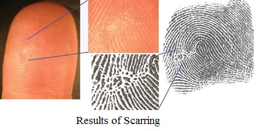

Dermatoglyphics is the study of the skin ridge patterns found on the tips of the finger. The types of fingerprint evidence that can be left at a crime scene are visible, latent, or physical.
VISIBLE fingerprints are easily seen by the human eye. They may be left on an object at a crime scene because of blood, perspiration, dirt, or oils on a suspect's hands.
LATENT fingerprints are hidden or concealed in some way and are, therefore, not visible to the naked eye. Most latent fingerprints are composed of perspiration and/or body oils. These types of prints need to be enhanced in some way to be visible.
Human skin is made up of two layers: the outer layer or epidermis is where fingerprint ridges are found and the inner layer called the dermis contains sweat glands.
Each ridge of the epidermis is dotted with sweat pores and is attached to the dermis. Sweat glands produce a water-based oil solution that is released from each sweat pore and coats the ridges of the epidermis. The ridges on the fingertips retain sweat and when the finger makes contact with a surface, sweat residue is left behind - this is the cause of any fingerprint impression.
Injuries such as burns, abrasions, or cuts do not alter the fingerprint ridge pattern because the original pattern is duplicated when new skin grows. A deep cut that destroys the dermis sometimes causes permanent damage or scarring. The fingerprint pattern below shows evidence of scarring:
